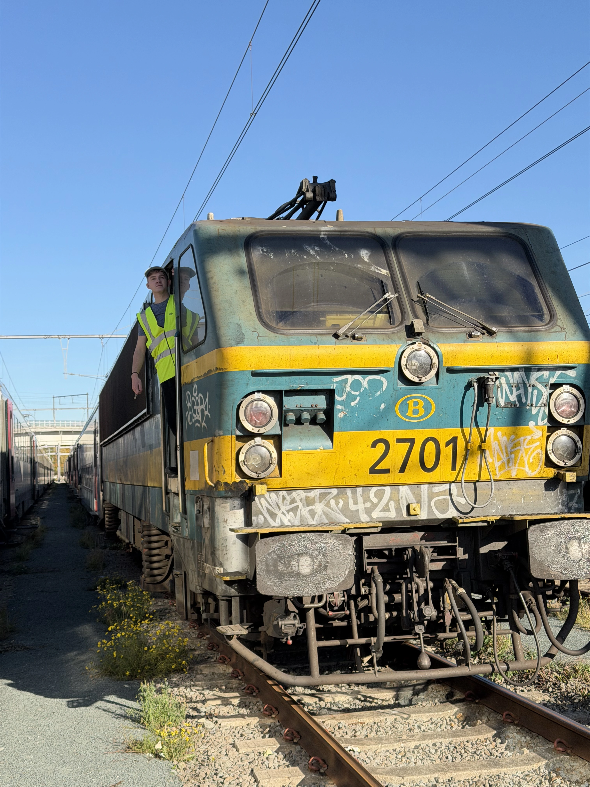

About me
A little more about who I am, my interest in railways, and what I want to share through trainbelgium.
Railways, photography and public transport
Hello! I'm an 18-year-old trainspotter from Herentals, Belgium, with a strong passion for trains and public transport.
My interest in transport started at a young age. Before deciding to become a train driver, I was originally interested in becoming a bus driver. Over time, that interest grew more and more towards railways, which eventually led me to trainspotting and railway photography.
I created the trainbelgium Instagram account in October 2023 to share my photos and experiences with trains and railways.

A personal photo that reflects both my interest in railways and my connection with the Belgian railway world.
What I photograph and why
Most of my photos are taken in Belgium, but I also enjoy travelling to other countries. I like discovering new cultures and seeing how railways and public transport work in different places.
Through this website I want to share my photos from different countries, locations and types of trains, often with a bit of extra context or explanation.
I enjoy photographing all kinds of trains, from passenger services to freight traffic. What I like most is combining trains with interesting surroundings, good light and strong locations.
Railway facts about me
My goal in the railway world
My goal is to build a long career within the railway sector. I would like to work for NMBS for many years, and perhaps later continue in freight transport.
Railway photography lets me combine my interest in trains with visiting new places and sharing these moments with others.
Why trainbelgium exists
This website is my place to share railway photography from Belgium and beyond. It brings together the trains I photograph, the places I visit, and the railway systems that interest me most.
Whether it's Belgian rail, international trains or freight movements, I hope this website gives visitors a nice overview of the variety I enjoy capturing.